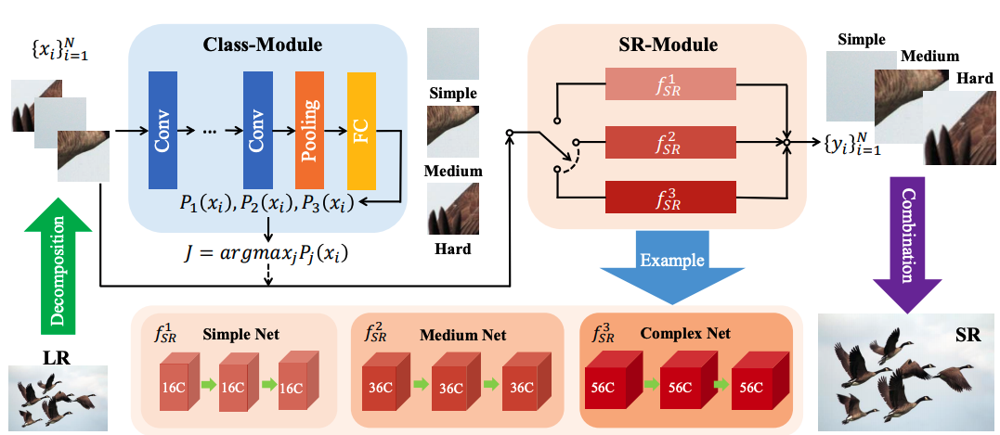

Xiangtao Kong (孔祥涛)
I am currently a second-year M.S. student in X-Pixel at SIAT-CAS supervised by Prof. Chao Dong and Prof. Yu Qiao. I mainly focus on the Low-level Vision, Super-Resolution, and Interpretability of Deep Learning in the Image Processing field. I obtained my Honors B.Eng. degree from Shandong University in 2020.
Email / Google Scholar / GitHub / CV(English) / CV(Chinese)
News
Publications
Reflash Dropout in Image Super-Resolution
Computer Vision and Pattern Recognition (CVPR 2022)

ClassSR: A General Framework to Accelerate Super-Resolution Networks by
Data Characteristic
Computer Vision and Pattern Recognition (CVPR 2021)
Efficient Image Super-Resolution Using Pixel Attention
European Conference on Computer Vision Workshops (ECCVW 2020)
We got fourth place of Efficient Image Super Resolution Challenge in
total 150 participants. (The lowest paramters, 272K)